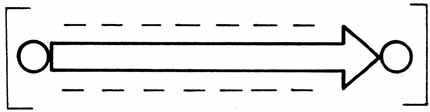

TOWARD A NEW ELECTROMAGNETICS
PART III: CLARIFYING THE VECTOR CONCEPT

(GEOMETER'S VECTOR)
Figure 1. Uncharged spatial (massless) system vector.
|
UNCHARGED SPATIAL (MASSLESS) SYSTEM
VECTOR This is the geometer's abstract vector, consisting of a "point in motion." (Actually, it is a "smeared point," for example.) However, so ingrained is the concept of a "point in motion" velocity vector that we now consider it to be "natural" because of its total familiarity. But simply ask, "WHAT is in motion?"17 and you immediately see the difficulty. To have a WHAT, one must "stop the action" (detect or measure), separating "static" from "non-static." Acceleration and other vectors, etc. have also been derived by the geometer and utilized in similar fashion. All are massless. |